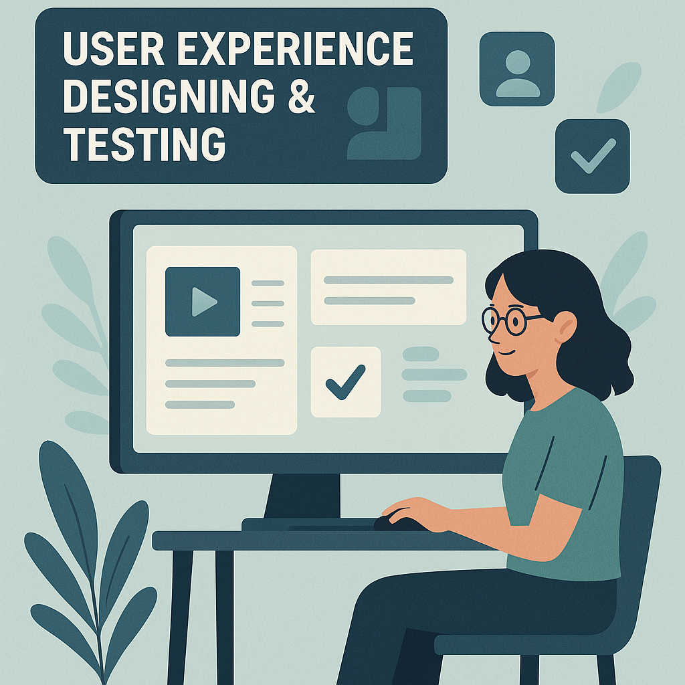
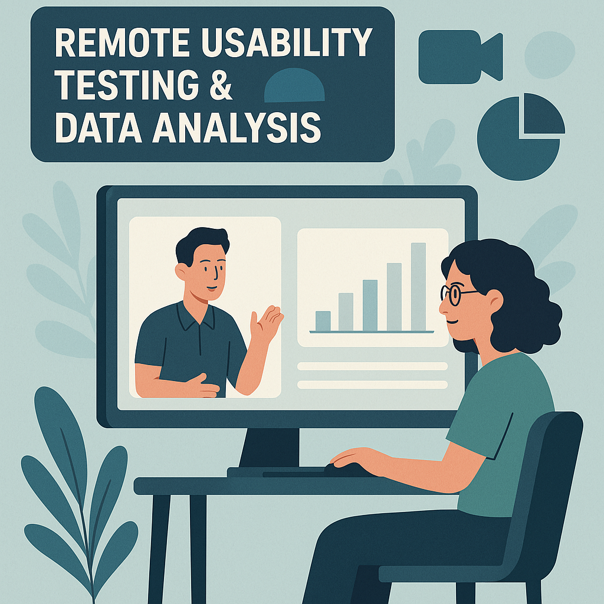
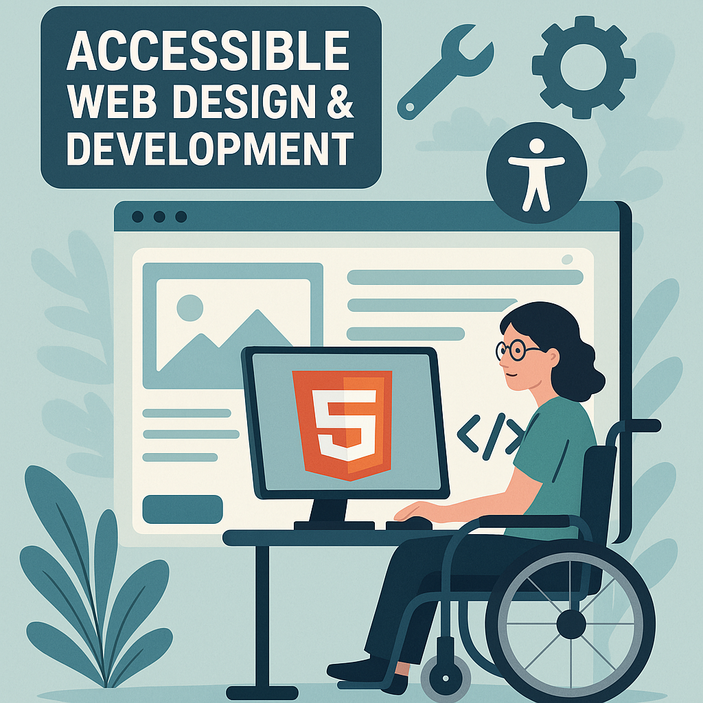
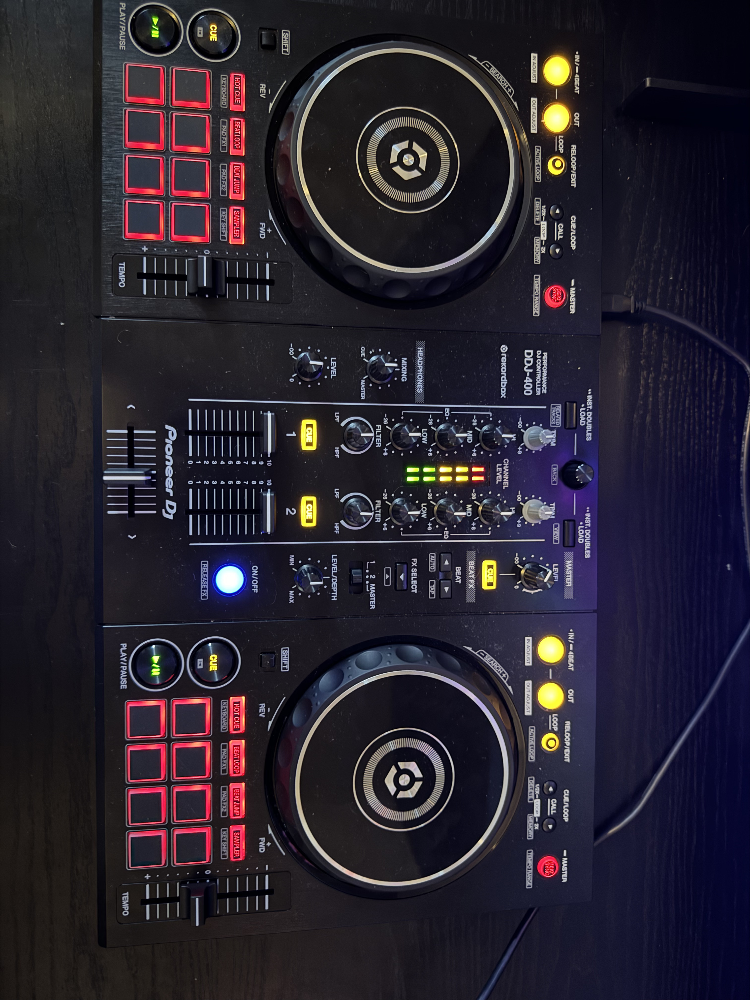

I’m a final-year Web Design & Development student at Edge Hill University, graduating in Summer 2025. I’m passionate about creating intuitive,
accessible digital experiences and have a strong foundation in UX research, prototyping, usability testing, and front-end development.
Alongside my studies, I work part-time at Sainsbury’s — an experience that’s strengthened my communication, time management, and teamwork skills.
What I can do
User Experience Designing & Testing

During my Fundamentals of UX Design module at university, I conducted a UX study on a Virtual Learning Environment (VLE) to evaluate user preferences and pain points of the system.
To gather insights, I designed and distributed user surveys to users of this system. Ensuring that the questions they contained were unbiased and carefully considered.
Using the survey data, I gathered multiple redesign concepts using the Crazy 8’s method, refining the most suitable concept into a more detailed sketch.
I then developed a wireframe incorporating real content that would be in the VLE, followed by a fully interactive prototype in Figma for testing purposes.
To assess usability of my proposed redesign, I conducted Think-Aloud testing with users of the original VLE, gathering feedback on improvements and potential new issues. The results were compiled into a report,
which contained the processes of analysing user preferences, the redesign development, and a conclusion of whether the proposed VLE effectively addressed identified pain points while ensuring no new usability concerns were introduced.
Remote Usability Testing

Following on from my Fundamentals of UX module. I completed a Usability Testing & Data Analysis module, which introduced me to testing websites without access to real users
I conducted a usability assessment of a website to identify usability, accessibility, and performance issues. Unlike my previous module which relied on user surveys and direct user testing,
this assessment focused on analytical methods to evaluate the site without direct user involvement.
I performed log analysis on the site's raw log data using Python tools such as Pandas & MatPlotLib (after firstly cleaning unnecessary data), as well as Accessibility & Performance testing using tools such as Chrome's LightHouse & ARC Toolkit.
A Cognitive Walkthrough was also performed to identify any issues with the site's flow. All of these methods helped to assess the overall user experience of the site with no access to users personally.
These methods helped identify potential usability barriers, performance inefficiencies, and user flow disruptions, particularly those that could slow down or discourage users from completing actions, such as paying their deposit.
As with the UX module, a report was produced containing descriptions of the usability and data analysis techniques used, as well as findings from the tests, and a comparison of the tests used and their findings.
Finally, proposed solutions to any issues identified were detailed, with justifications as to why these solutions would be suitable and why it is important to implement them, as well as which recommendations are the most important out of them all.
Accessible Web Design & Development using HTML5

My Web Design & Development module in first year of university gave me the fundamental knowledge of developing accessible websites using HTML5 semantic tags.
This module also introduced me to CSS, including CSS Grid & Flex for responsive layouts. During this module, I completed 10 small portfolio tasks to demonstrate my understanding,
as well as the development of a full site based on screenshots of the desired design. I also created a mobile layout of this website that remains fully accessible for those viewing on mobile with smaller screens.
I have since developed several more accessible websites, expanding my knowledge. Examples of these include a site for a fictious dog walking company where I followed a brief, and created a website according to it.
The goal of this website was for users to contact the company and get them business. I also created a web page for an air fryer, with it's goal to get users to purchase the product.
My final project at university was to create a website that stands out compared to other websites which all follow very similar design patterns to one another. My website was a tour guide to Liverpool.
I chose to make a site on this as I found that all tourist websites were very similar to each other, which gave me ideas on how to make my one unique in comparison. I used my UX skills during this project to ensure
that my website met the user's needs, and that my designs were suitable though unique compared to others. I also used my usability testing skills to ensure that my unique site remained fully accessible and performed properly.
My Work
Here are some examples of my work. Click any project to learn more and to see them for yourself. Like my work? Feel free to get in touch!
For my final project at University, I chose a project called "The Web is Boring!" in which I was tasked with designing & developing a website that stands out compared to other sites which all follow the same, standardised design patterns.
I chose to make my website a tourist guide to the city of Liverpool, as being from there myself simplified the content gathering process tremendously. I chose this project as it gave me a great opportunity to demonstrate what I had learned
througout the course of my degree, specifically the knowledge from the UX & Usability modules that I mentioned in my Skills section.
Before starting this build, I did a desk research survey on 5 existing tourist sites to evaluate which content they provided, as well as what their designs were like. I gathered all of the content ideas into a table,
and found that all of the designs were very similar. All sites had the same large banner image, with a nav bar across the top. And they mostly contained the same colour schemes with blue and orange accents.
This gave me some ideas of how to make my site stand out and be different to all of these other websites. I also conducted short user surveys and handed them to possible users of a site like this,
in order to get feedback on what contents they would like to see in the site.
To create my unique design for the site, I started by utilising the Crazy 8's method which I learned during my UX module. This involves simply drawing out 8 low fidelity designs quickly on paper.
The 8 designs were then narrowed down to just one which I felt was the most appropiate, and this was developed into a higher fidelity sketch with more detail. Once happy with this, I then used Figma, a prototyping tool,
to create an interactive prototype of the website with some real content added. This allowed me to test out the navigation system for myself to identify whether it would be suitable. I also got users to test this system to ensure it's ease of use.
Finally the site was ready to be built. I used an evolutionary prototyping method whilst building the site, incorporating one feature at a time and testing it as i go to ensure that it works as intended. This eliminates the possibility of
serious issues arising later on in development and taking more time to fix.
This website is based off a client brief I was provided with for a fictious dog walking company. I was provided with all of the content the client wished to be included in the site.
The client also mentioned some design elements they wished to see, such as pastel colour scheme with mainly light blue tones, as well as paw patterns being added to the background.
I was also provided with 5 other dog walking sites which the client liked, and elements of them which they would like to see in this site.
My reason for choosing to do this project is to show that I am capable of interpreting a brief from a client in the real world, as this is as close as I was able to get to this experience during my time at University.
I was also able to demonstrate my UX & Usability skills in this project, as well as semantic, accessible web coding.
The process of developing this site was similar to the project one, however I did not have to perform the desk research survey or gather the content myself, as the client had already done this for me.
I started with the Crazy 8's designs, and picked one of these to draw again in higher detail. An interactive prototype was then created in Figma, and shown to the client (my tutor)
to ensure that they approved of the design before I started building it.
The build itself again used the Evolutionary Prototyping Methodology, which ensured that each feature worked as intended before moving onto the next
to prevent further delays and issues as development went on.
This is a game I had to design & develop during my Mobile Applications & Games Development module at University. I was tasked to use the Phaser JavaScript framework to develop a game that implemented a series of features,
which are as follows: A main menu which allows the user to select the game type/difficulty, Particle effects, Score tracking, Collision detection, Achievements to award the player as they progress, and a difficulty modifier with 3 modes; Easy Medium & Hard.
I chose to develop a Tower Defense game as it is able to effectively accomodate the required features, and I enjoyed the gameplay of other similar games such as Bloons TD, so decided to create my own.
As well as the difficulty selector with the 3 levels, the game also features progressive difficulty mechanics, which makes the enemies faster & tougher as the level increases. Particle effects were used on both the towers as they shoot,
as well as enemies when they are eliminated.
Prior to developing this game, I designed a flowchart to plan how the game loop would work. This simplified the development process as it allowed me to understand how the game was to work before building it in the code.
As with my other projects, I used a prototyping methodology, where I implemented one feature and got it working perfect before moving on to the next. This helped to prevent any issues arising later on in the game development.
I enjoy going on walks. I do this almost every day which helps me to keep fit & active whilst also giving me time to clear my mind.
My dog Toby accompanys me on these walks, although he doesn't approve sometimes, especially if its rainy or cold!
I also enjoy going swimming and the steam room & sauna, whether this be at my local centre or elsewhere.
Swimming really helps me to relax and clear my mind and makes me feel refreshed.
DJing & Music

I enjoy listening & experimenting with many types of music. In my spare time I occasionally record DJ mixes, although i keep this as a hobby and do not perform at any venues.
As a rather creative person, I enjoy playing around with different tracks and seeing which ones mix well together.
Taking Photos
I like to take pictures usually when on my walks or elsewhere. I do not have a professional camera, I just use my phone for them. If you would like to view some more, don't click here. as it does not work yet.